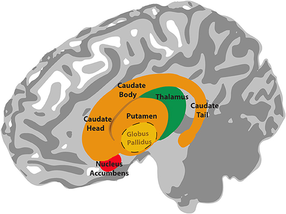
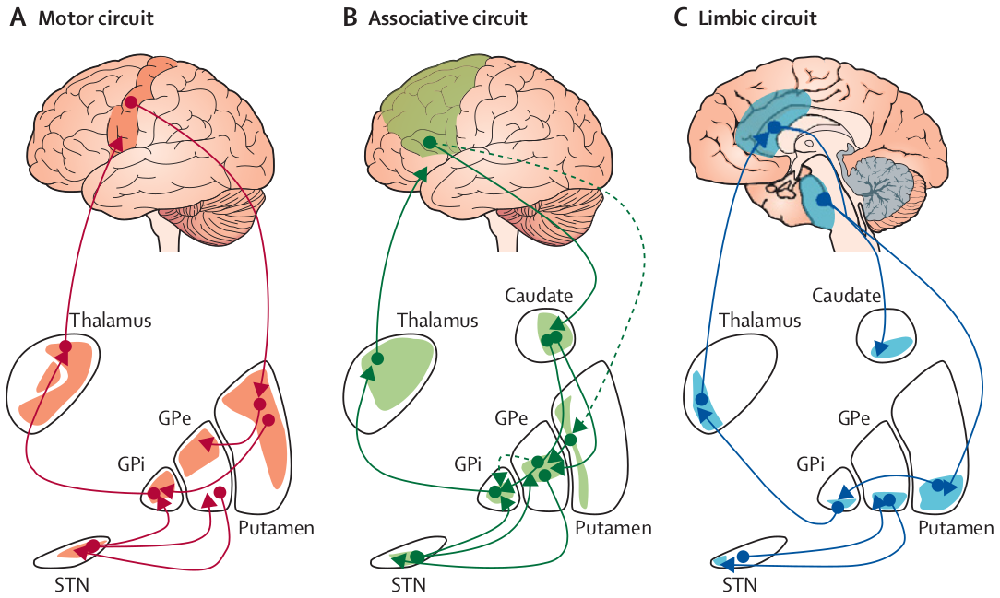
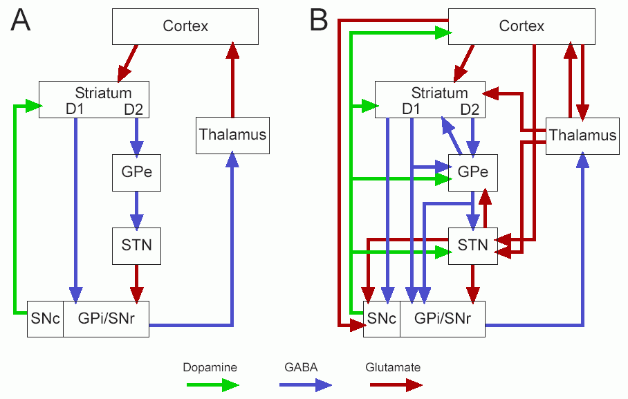
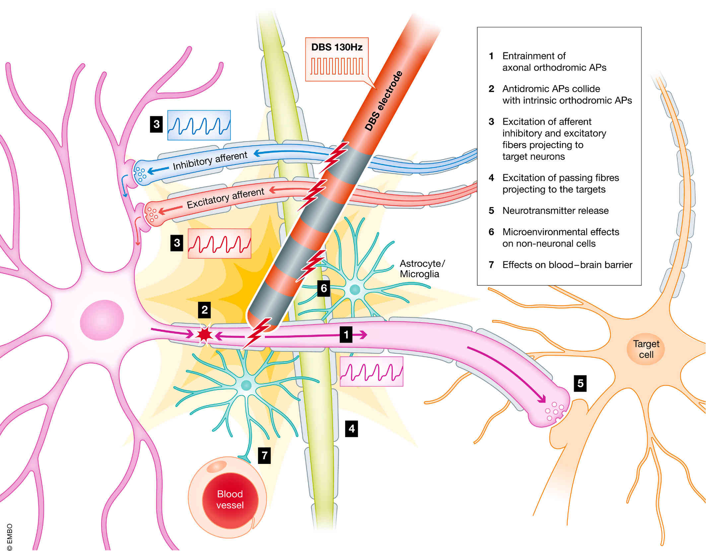

The underlying motivation for the research undertaken in this thesis is to improve the outcomes of deep brain stimulation therapy for Parkinson’s disease. This requires an understanding of the neurobiological underpinnings of the disease and the role of deep brain stimulation, historically and within the course of treatment for PD patients. To this end, the neuro-anatomical substrate for PD, the basal ganglia, and the primary pathological features will first be introduced. They will be presented both from a cellular/molecular perspective and from a network perspective, as local physiological changes become manifest in aberrant network interactions reflected in cognitive/behavioral symptoms. Insights into the mechanisms of DBS will also be reviewed from both these perspectives, and finally it it shown how computational modeling can bridge the gaps between these different ways of understanding the disease.
Parkinson’s disease is a complex neurodegenerative disease that is difficult to diagnose in the early stages and has distinct clinical manifestations across patients and over the course of disease progression. It is associated with several motor and neuropsychiatric symptoms [166], with the primary motor symptoms characterized by muscular rigidity leading to bradykinesia and akinesia, as well as tremor and postural instability. These symptoms can become severely debilitating depending on the state of disease progression, leading to a significant reduction in quality of life and high socio-economic burden [136, 372, 268].
The root cause of Parkinsonism is the degeneration of dopamine-secreting neurons in the substantia nigra pars compacta (SNc), one of the nuclei of the basal ganglia (BG), which is triggered by both genetic and environmental factors [171]. Because the SNc innervates other structures in the basal ganglia, where the secreted dopamine serves mainly as a neuromodulator regulating brain plasticity and cell excitability, the loss of dopaminergic neurons leads to widespread structural and functional changes throughout basal ganglia thalamo-cortical circuits. This has led Parkinson’s sisease to become characterized as a network dysfunction [240]. Indeed, the basal ganglia are a central node in motor, associative, and limbic networks [163]. Its role has been associated mainly with action selection and sequencing, and coordinating the interaction between deliberate/goal-directed and habitual/automatic behaviors across cognitive domains. In the latter role, the BG rewires itself using reinforcement learning with dopamine functioning as a reward signal and is believed to subserve the learning or transfer of slow, deliberate to fast automatic behaviors. This central and integrative nature of the BG may explain the seemingly unrelated features of Parkinsonism which span motor and mood disorders, problems with memory and attention, and inhibitory control.
The clinical features of Parkinson’s disease include both motor and non-motor symptoms. Non-motor symptoms commonly occur in early PD, and before motor symptoms are manifest [291, 179]. They include sensory and sleep abnormalities, psychiatric symptoms, autonomic dysfunction, pain and fatigue [58, 179]. The cardinal motor symptoms of PD are resting tremor, muscular rigidity, bradykinesia/akinesia, postural instability and gait disturbances. While these features occur in different combinations between patients, the consensus is that there are two major clusters of symptoms, corresponding to PD subtypes [230]. These subtypes are tremor-dominant and non-tremor dominant PD, with the latter characterized mainly by akinetic-bradykinetic symptoms, postural instability, and rigidity. The resting tremor characteristic of tremor-dominant PD is often difficult to separate from essential tremor, which is characterized more by kinetic and postural tremor [36]. Resting tremor manifests itself in uncontrollable shaking mainly in the distal parts of the limbs (hands, fingers, feet) and occurs within the frequency bands 4-6 Hz or 8-11 Hz [186, 258]. While symptoms falling in the two subtypes of PD are not correlated to each other [215], tremor-dominant patients were found to transition to a mixed or akinesia dominant phenotype in 15-28 %, respectively 46-50 % of cases [363]. The bradykinesia and akinesia characteristic of non-tremor-dominant PD is a slowness of movement or inability to move that manifests itself both in the planning/initiation and execution phase [28]. Notably, its severity is dependent on emotional state and is reduced when the patient is presented with an external trigger or cue, suggesting that motor programs are intact but difficult to access [166]. Moreover, compared to tremor, bradykinesia/akinesia and rigidity correlate more strongly with dopamine loss in the BG [13, 149, 307] and with pathological neuronal activity patterns in BG structures characteristic of PD, such as increased beta-band oscillatory activity and bursting [254, 323].
The primary treatment from Parkinson’s disease is dopamine replacement therapy in the form of the dopamine precursor levodopa or dopaminergic agonists. However, chronic dopamine replacement therapy typically introduces new symptoms such as levodopa-induces dyskinesias and on-off state fluctuations where the responsiveness to medication and severity of motor symptoms fluctuate over time. Deep brain stimulation (DBS) is a clinically effective and safe alternative therapy to manage the motor symptoms of PD that is most commonly prescribed under these circumstances, when pharmacological treatment alone is no longer effective [286, 41, 367, 27]. However, the spectrum of indications for DBS is expanding beyond resistance to pharmacological treatment to early-stage motor symptoms of PD [318, 138] as well other neurological and psychiatric disorders [217, 187] such as obsessive-compulsive disorder [128] and treatment-resistant depression [233].
DBS was developed initially as a safer and reversible alternative for the ablation (lesioning) of deep brain structures and consists instead of chronic stimulation of these structures using implanted electrodes. Continuous high-frequency stimulation is typically administered in the STN or internal globus pallidus (GPi) for the treatment of Parkinsonian motor symptoms, or in the thalamus specifically for treating tremor [371]. The current clinical standard is high-frequency DBS, where pulses are delivered continuously at a frequency between 130-180 Hz, on a patient-specific basis [256, 352, 206]. However in recent years, adaptive stimulation protocols have been trialled on patients and proven effective at improving motor symptoms [210, 53], with potentially improved outcomes compared to continuous high-frequency DBS [211]. Such adaptive protocols are event-driven, triggered by monitoring a biomarker associated with motor symptoms such as oscillatory power in the local field potential [210] or the phase of the tremor signal recorded using an accelerometer [53].
Besides DBS therapy, various forms of transcranial magnetic and electrical stimulation (TMS; tES, respectively) were shown to be effective at improving Parkinsonian motor symptoms [124]. These stimulation modalities provide a potential non-invasive alternative to DBS, which requires invasive surgery, and work by delivering electrical currents to brain tissue directly or by inducing them indirectly through magnetic induction. Using repetitive transcranial magnetic stimuation, both low-frequency (0.2 Hz, [331]) and high-frequency (25 Hz, [178]) stimulation protocols proved effective at improving motor symptoms. A meta-analysis showed that tES was as effective as TMS at improving motor scores, increasing potential clinical viability of due to reduced costs and size of the equipment [124].
Despite promising results of these alternative stimulation modalities in experimental settings, DBS remains the standard of care, next to drug therapy, due to its effectiveness at controlling symptoms and possibility chronic administration using an implantable pulse generator. However, DBS therapy still has several important shortcomings. On average, it offers only 40-50% improvement in motor symptoms as assessed by the unified Parkinson’s disease rating scale (UPDRS) [59, 318]. Moreover, the indications for DBS applied to targets in the BG are primarily akinetic-bradykinetic symptoms and tremor whereas it is ineffective for the treatment of axial symptoms such as freezing of gait, and for mood disturbances and cognitive symptoms [92, 245]. Although the scope of DBS is being expanded to other targets in the brain to treat such symptoms [351], treatment is not yet clinically established as the efficacy is not robust over time [159]. The development of tolerance to DBS is not uncommon [192, 157], necessitating frequent reprogramming of the stimulation parameters which remains a largely empirical procedure, is costly, and time consuming. Moreover, there is a range of stimulation-induced side effects with varying rate of incidence, ranging from dyskinesias (involuntary movements) to mood disturbances [131, 27].
The basal ganglia consist of four subcortical nuclei of which the structure and interconnectivity is conserved throughout the vertebrate evolutionary line [130]. These nuclei are the striatum, globus pallidus, subthalamic nucleus, and substantia nigra (Fig. 2.1). In primates, the dorsal part of the striatum is further subdivided into a head and a tail: the putamen and caudate, and the globus pallidus is divided into an external and internal part (GPe and GPi, respectively). The substantia nigra, finally, is divided into the pars reticulata (SNr) and pars compacta (SNc).


As shown in Fig. 2.2, the BG are organized in parallel loops corresponding to different functional-cognitive domains. These basal ganglia-thalamocortical (BGTC) loops start from distinct functional regions in the cortex and project topographically throughout the BG starting in the striatum, the major input structure. The output structures of the BG are the GPi and SNr, which target thalamic nuclei and areas of the brain stem. Through the thalamus, the BG projects back to its input regions but it also has direct control over spinal motor circuits via the brain stem. Although the topographic organization of the BG ensures a high degree of segregation between loops [14], a sharp reduction in numbers of neurons and axons from input to output also results in significant convergence of information along BG pathways [173].

The major projections of the basal ganglia are shown in Fig. 2.3. Most projection neurons in the BG have an inhibitory effect on their targets (Fig. 2.3, blue arrows), using the neurotransmitter GABA. Moreover, because neurons in the output nuclei, the GPi and SNr, are tonically active, the BG keeps its targets in the brain stem and thalamus under constant inhibition. This tonic inhibition can be transiently lifted or increased by a control system implemented by the other BG nuclei and driven by cortical activity.
A classical and influential model, the dual pathway model [13], posits a simple mechanism where two pathways exert an opposing influence on the output nuclei (GPi/SNr): A direct pathway, originating in striatal medium spiny neurons (MSN) expressing D1-type dopamine receptors (D1R), projects directly to the output nucleus (GPi) and disinhibits BG targets. Another, indirect pathway originating in D2 receptor (D2R) expressing MSN inhibits the GPe, itself a source of tonic inhibition to GPi/SNr, and therefore has a net excitatory effect on BG targets. The direct and indirect pathways have a push-pull influence on GPi/SNr activity: they are also called the go and no-go pathways as their activation facilitates and suppresses specific motor behaviors, respectively [188], by regulating the degree of inhibition over motor targets in cortex and brain stem circuits. This gating activity is resolved primarily in the striatum, where sensorimotor inputs from cortex and contextual information about ongoing actions from thalamus are integrated [167, 163].
While this dual pathway model has generally withstood experimental validation [54, 112], subsequent anatomical and physiological studies have revealed a more complex organization of BG circuitry (Fig. 2.3.B) [225, 260, 54]. Of particular importance is the hyperdirect pathway, projecting directly from the cortex to the STN, bypassing the striatum [259]. This projection provides a low-latency pathway to the GPi/SNr that underlies fast inhibition of BG targets and rapid termination of motor activities [260]. This pathway has received significant attention in the context of PD because it is believed to play a key role in transmitting pathological activity from the cortex to the STN, and in its suppression through activation by DBS [218, 203, 126, 202].
Another set of projections crucial to the understanding of PD pathophysiology is SNc innervation of the other BG nuclei, with the densest projections targeting the striatum (Fig. 2.3, green arrows). These projections use the neurotransmitter dopamine, acting as a neuromodulator on its targets. There it regulates synaptic plasticity and neuronal excitability through second messenger systems after binding G-protein coupled receptors of the D1 and D2 families. During normal function, the SNc mediates reinforcement learning in the BG by providing a phasic dopamine signal that codes for a reward prediction error [25]. Its primary role is to strengthen neural pathways in the BG that contributed to better-than-expected outcomes during everyday activities. This reinforcing of pathways and associated behaviors is thought to underlie the acquisition of habitual behaviors and motor sequences and operates by modulating neuronal excitability and synaptic strengths in the BG, primarily between the cortex and striatum.
In PD, the dopaminergic cells of the SNc degenerate, resulting in a disruption to dopaminergic innervation of the rest of the BG. This lack of dopamine leads to widespread structural and functional changes throughout basal ganglia thalamo-cortical circuits, reflected in altered neuronal activity patterns and the various motor and non-motor symptoms of PD. In this section, the main neurobiological changes induced by DA depletion will be summarized for each BG nucleus. In the following section, it will be discussed how distributed changes in BG network pathophysiology are thought to arise as a result of these local changes.
Dopamine depletion induces changes in axonal innervation of the STN and in synaptic transmission onto STN neurons (Table 2.1-2.2). The dynamics of synaptic transmission are altered presynaptically, through changes in the dynamics of synaptic release [23], and postsynaptically, by modulating the subunit composition of synaptic receptors [64] and altering dendritic branching and spine formation [64, 364]. Moreover, synaptic plasticity in the STN is impaired, resulting in the inability of homeostatic mechanisms to balance excitatory and inhibitory transmission to STN neurons [63, 64]. Strengthening of GPe synapses [99, 63, 23, 328] , in combination with faster AMPAR-mediated PSC [64], increased coupling of glutamergic synapses to intrinsic calcium ion channels [64, 297], and decreased conductance of channels responsible for intrinsic pacemaking of STN neurons [214, 384, 242] are thought to lead to a situation where STN neurons are more susceptible to patterning by alternating phases of rhythmic excitatory and inhibitory post-synaptic potentials (EPSP and IPSP, respectively; [21, 140, 33, 224, 225, 63]).
| Source | Feature | Effect dopamine depletion | Experiment conditions |
| CTX | Synaptic currents | increased AMPA-mediated current; decreased NMDA-mediated current | 6-OHDA lesioned rats, brain slices, bath application of neurotransmitters [328] |
| CTX | Synaptic currents | amplitude of AMPAR-mediated current reduced by factor 3; restored by NMDA knockdown; no change in AMPAR:NMDAR ratio | 6-OHDA lesioned mice, brain slices, optogenetic stimulation [64] |
| CTX | Synaptic contacts | decrease in synaptic contacts; loss of dendritic branching and spines | 6-OHDA lesioned mice, brain slices [64]; 6-OHDA lesioned rat [364]; MPTP lesioned monkeys [231] |
| CTX | AMPA synapse subunit composition | reduced Glu2A subunit expression; faster AMPA-mediated PSC | 6-OHDA lesioned mice, brain slices [64] |
| CTX | Synaptic plasticity | LTD of CTX-STN tranmission is impaired: no LTD when NMDAR activated; but no changes in STD | 6-OHDA lesioned mice, brain slices [64] |
| CTX, GPe | Synaptic plasticity | hLTP: Strength of CTX-STN and GPe-STN transmission normally balance each other; this effect is contingent on NMDAR and impaired by DD | |
| CTX, GPe | Synaptic plasticity | in DD, GPe-STN transmission is maximally strengthened by impaired hLTP; the ratio of CTX-STN to GPe-STN transmission is reduced |
| Source | Feature | Effect dopamine depletion | Experiment conditions |
| CTX, GPe | Synaptic plasticity | hLTP: Strength of CTX-STN and GPe-STN transmission normally balance each other; this effect is contingent on NMDAR and impaired by DD | |
| CTX, GPe | Synaptic plasticity | in DD, GPe-STN transmission is maximally strengthened by impaired hLTP; the ratio of CTX-STN to GPe-STN transmission is reduced | |
| GPe | Synaptic currents | Increased release probability, frequency, decay kinetics of GPe-STN synapses. | |
| GPe | Synaptic contacts | Increase in the number of GPE-STN synapses | |
| GPe | Synaptic currents | increased GABAA and GABAB-mediated currents | 6-OHDA lesioned rats, brain slices [328] |
| Feature | Causes | DD-induced changes | Physiological effects | Experimental setting |
| AMPA synapse subunit composition | CTX | reduced Glu2A subunit expression | increased permeability to Ca2+ | 6-OHDA lesioned mice, brain slices [64] |
| ion channel expression | reduced D2R activation | increased SKCa conductance through increased Cav2.2 activation and Ca2+ coupling. | reduced excitability and bursting, less linear response. | [297] |
| ion channel expression | reduced D1R activation | reduced conductance of depolarizing HCN channel | reduced recovery from inhibition; increased de-inactivation of CaT channels; increased rebound bursting | |
| ion channel expression | reduced D5R activation | reduced Cav1 channel conductance | reduced excitability and bursting | |
| ion channel expression | D1R/D5R mediated activation of cAMP/PKA pathway | reduced activation of cyclic-nucleotide gated (CNG) non-specific cation channel | reduced excitability and spontaneous activity | [214] |
| ion channel activation |
| increased conductance of voltage-independent K+ channels | reduced excitability and spontaneous activity | [384] |
| ion channel activation | increased hyperpolarization of STN neurons | voltage-dependent de-inactivation of CaT, CaL channels, NMDAR-dependent activation of CAN channels | increased bursting | |
| ion channel activation | disinhibition by GPe | homeostatic upregulation of channel mediated by NMDAR activation | reduced autonomous activity | [242] |
In the GPe, dopamine depletion leads to increased GABAergic transmission due to strengthening of GPe-GPe collaterals [248, 366], and increased transmission through the striatal indirect pathway because of elevated iMSN activity [222, 181], an increase in the number of functionally active MSN-GPe synapses [162], and an increase in their initial release probability [333, 66]. Glutamergic transmission from the STN is strengthened [232, 151, 169, 183] and intrinsic cellular properties of GPe neurons are also affected. Importantly, the expression of HCN channels is downregulated after DD [56], resulting in decreased autonomous pacemaking and a decreased ability of IPSP to reset GPe pacemaking [55].
The striatum is one of the primary sites of dopaminergic innervation in the BG, where phasic dopamine release modulates synaptic plasticity and plays a role in learning motor behaviors. The main role of dopamine is to strengthen cortico-striatal synapses of the direct pathway, facilitating interruption of the tonic inhibition of motor targets by GPi/SNr, and to weaken those in the indirect pathway (both pro-kinetic changes). The loss of dopamine reverses this effect, weakening the direct pathway and strengthening the indirect pathway, both anti-kinetic changes (Table 2.4). This results in homeostatic adaptations at multiple levels [380]. In the indirect pathway, for example, the strengthening of existing CTX-iMSN synapses leads to a compensatory loss of dendritic arborization and pruning of spines [104, 340, 75], but an increase in iMSN intrinsic excitability [152, 75]. Moreover, striatal FSI shift their projections from dMSN to iMSN [122], and the GPe-MSN backprojection mediated by GPe arkypallidal neurons is strengthened [67], leading to increased inhibition of iMSN of the indirect pathway.
| Population / Projection | Feature | Effect dopamine depletion | Experiment conditions |
| iMSN | spontaneous activity | firing rates increased | |
| Ctx-iMSN | synaptic contacts | loss of glutamergic synapses, dendritic spines, arborization | |
| MSN-MSN | synaptic strength, contacts | reduced connection probability, iPSC amplitude | 6-OHDA lesioned mice [348] |
| FSI-iMSN | synaptic strength | increased connection probability | 6-OHDA lesioned mice [122] |
| GPe-iMSN | synaptic strength, contacts | increased connection probability, IPSC | 6-OHDA lesioned mice [67] |
In the traditional understanding of BG pathophysiology in Parkinson’s disease, the synaptic plasticity changes induced by dopamine loss (discussed in Section 2.3.2) result in an imbalance in activity in the direct and indirect pathways of the BG. Under this hypothesis (rate model of PD), this imbalance leads to hyperactivity of the BG output nuclei in the GPi/SNr resulting in the hypokinetic motor symptoms of PD [80, 13]. However, while changes in neuronal firing rates in the striatum, GPe, and STN largely agree with this hypothesis [117], later studies showed that alterations in firing patterns rather than rates may have a stronger relation to the motor symptoms of PD [201, 44, 43, 314, 323, 273, 181]. In particular, dopamine depletion has been associated with a loss of specificity in neuronal responses [40], characterized by increased synchrony in neuronal activity within and between nuclei [29, 88, 42, 142, 201, 148] and exaggerated oscillatory activity throughout the BG [325, 224, 189, 44, 43].
During normal brain function, oscillatory synchronization is believed to play a key role in communication between brain regions by temporally coordinating firing patterns [94, 373]. In the BG for instance, transient beta-band synchronization occurs in healthy patients and animals [282, 200, 370, 208, 177] and is thought to underlie the suppression of competing motor plans (global motor suppression) in favor of the active motor program (status quo) during sensory cue utilization [118, 200, 102]. Conversely, phasic movement is correlated with a reduction in cortico-muscular coherence in the beta-band [45]. Hence beta band power in the BGTC and motor circuits has been interpreted as a global stop signal that delays movement execution while sensory information is still being processed in preparation for the activation of a motor program (buying time hypothesis, [109]). However in Parkinson’s disease, exaggerated synchronization occurring in the form of prolonged and more frequent beta bursts are linked to the disruption of normal sensorimotor processing and correlate with motor impairment [353, 354].
Indeed, beta-band (13-30 Hz) oscillations in the BG are consistently strengthened with dopamine depletion, both in individuals with PD and in parkinsonian animal models [325, 224, 189], and are reduced by deep brain stimulation and pharmacological interventions that alleviate parkinsonian motor symptoms [190, 369, 97, 303]. The magnitude of subthalamic nucleus local field potential beta oscillations is also correlated with the severity and degree of improvement of bradykinetic/akinetic motor symptoms and rigidity [190, 42, 262]. Although beta-band oscillations may not be causal to bradykinetic/akinetic symptoms [197, 342, 85, 273], they offer potential as a biomarker for symptom severity and the underlying network pathophysiology in advanced Parkinson’s Disease [311, 210]. Other studies have found that sub-beta-band oscillations ( 13 Hz) in the LFP are correlated with bradykinetic-akinetic and axial symptoms of PD [323, 85]. This frequency band overlaps with the frequency range of Parkinsonian tremor (4-7 Hz, [186, 258]). Tremor-related activity has been observed in the STN in single cell and multi-unit spiking activity [219, 15], and in local field potentials [304, 344]. Finaly, gamma band ( 30 Hz) oscillations in the BG and thalamic receiving areas of the BG are reported as pro-kinetic in PD patients and correlated positively with movement and DA administration in several studies [176, 172, 85, 44].
The origin of exaggerated beta-band oscillations in the dopamine-depleted BGTC network, however, remains unclear. The most prominent hypotheses emphasize the importance of dopamine-modulated strengthening of particular feedback loops within the BGTC network. Computational models have provided a valuable tool with which to explore various hypotheses regarding the mechanisms by which oscillatory activity with the network is generated. Different models have placed the origin of beta and sub-beta-band oscillations in the STN-GPe network [349, 121, 154, 279], in cortical and thalamo-cortical circuits [330, 306, 278, 213], in striatal or pallidostriatal circuits [235, 67, 70], or in the full BGTC loop [278, 193, 196, 174]. These models show that under many conditions the network is prone to oscillate, through intrinsic pacemaking or susceptibility to an extrinsic rhythm.
The reciprocally connected subthalamo-pallidal (STN-GPe) network is a key site in the basal ganglia in which beta-band oscillations are manifest in Parkinson’s disease [223, 224]. This network was an early focus of modelling studies due to its reciprocally connected structure and ability to generate low frequency oscillations in tissue cultures [287]. Models of the STN-GPe as a pacemaker initially focused on the generation of low frequency oscillations within the frequency range of parkinsonian tremor [119, 349], with focus shifting to the beta-band with increasing evidence of a link between beta activity and parkinsonian motor symptoms [154, 279].
More recent experimental evidence suggests that, rather than the STN-GPe network operating in a pacemaking mode, patterning by cortex may play a critical role in the generation of pathological beta-band oscillations in Parkinson’s disease. This is supported by observations of high functional coupling between cortex and STN [223, 220, 255, 325, 212, 337], and that oscillatory activity in STN-GPe is contingent on inputs from the cortex and can be abolished by disrupting them [91, 221, 343]. Cortical patterning of the STN-GPe network by means of feedback inhibition provides a proposed mechanism for this functional coupling [21, 33, 343, 223, 225]. According to this hypothesis, weak oscillatory activity entering the BG network via cortico-STN and/or cortico-striatal afferents is amplified in the STN-GPe network when feedback inhibition from the GPe is offset in phase with cortical excitation. Several mechanisms have been hypothesized to contribute to the increased susceptibility of the STN-GPe feedback loop to oscillatory entrainment after dopamine depletion. First, the increased effectiveness of GPe IPSP in hyperpolarizing STN neurons leads to stronger coupling of STN spikes to cortical EPSP, as a result of the higher availability of and channels that enable low-latency responses and rebound spiking [21, 140, 141, 272]. Second, after DD both STN and GPe neurons undergo changes in ion channel expression that decrease autonomous pacemaking and de-linearizes their current-firing rate response [214, 384, 243, 242, 56]. Finally, striatal iMSN become functionally decoupled from cortical motor inputs through de-afferentiation and dendritic shrinkage and increase their spontaneous activity: this decreases their ability to precisely interrupt GPe neuron activity and results in a phase shift in GPe neuron spiking activity relative to CTX afferents to the STN [75, 21, 222, 223, 225]. Feedback-mediated oscillations that are hypothesized to arise as a result of these physiological changes have been observed in vivo [280] and in slices [21]. However, computational models have not yet been used to investigate how pathological activity may arise as a result of the combined effect of such changes in neurophysiology and cell morphology. Moreover, the ability of the network to generate autonomous oscillations and its resonant response properties are still poorly understood.
Despite its clinical success and widespread adoption, the mechanism of action of DBS remains unclear, both at the cellular and network level (Fig. 2.4). At the cellular level, the interaction of the electric field generated by the implanted electrode with the polarizable neuronal membrane can produce complex effects depending on local electrical membrane properties, neurite geometries and their orientation in the electric field [299, 265, 168, 377]. In addition, the indirect effects resulting from the modulation of local neurochemistry through neurotransmitter and gliotransmitter release are poorly understood [237]. The mechanism of action at the network level is also unclear, with high-frequency spiking patterns in stimulated neurons propagating both orthodromically and antidromically [203] along the axons, affecting synaptic filtering properties downstream [308], and resulting in spike collision or somatic invasion upstream [202, 175].

At the cellular level both excitatory and inhibitory responses have been observed in stimulated neurons in response to DBS, mediated by different mechanisms. Stimulation of local GABAergic and glutamergic afferents can produce both types of responses [198, 17], including multiphasic ones [20, 95, 234, 181]. Direct effects on the membrane voltage can trigger spikes through the activation of voltage-gated Na channels [237], but can also cause depolarization block, and inactivation of ion channels over time [31, 86, 332].
Overall, the experimental evidence supports the hypothesis that the net effect of DBS on somatic activity depends on the relative glutamate/GABA composition of activated axon terminals on the target neurons [61]. In the STN, GABAergic synapses outweigh glutamergic ones [274] but they exhibit varying degrees of short-term depression or facilitation at different time scales, which is engaged by high frequency stimulation [19, 113, 338, 249]. Differential depression in combination with variability in the number of afferents activated during stimulation and the unreliability of high-frequency recruitment [382, 308] complicates making straightforward predictions of the net effect of activation. Inhibitory synapses on STN neurons were previously found to exhibit lower levels of depression during DBS compared to excitatory synapses [338]. Moreover, inhibitory currents mediated by metabotropic GABAB receptors are enhanced by high-frequency coincident excitation of GABAergic afferents [33], likely contributing to a net inhibitory effect of high-frequency DBS on STN neurons. In support of this, recent experiments have shown that prolonged silent periods in STN neurons are triggered by high-frequency stimulation (HFS) and that the length of silent periods correlated with improved clinical outcome [249]. This inhibition of STN somata was hypothesized to be caused by activation of GABAB receptors [249] or by an altered balance of excitation and inhibition during DBS, mediated by differential short-term depression of GABAergic and glutamergic synapses [338].
Consistent with these experimental observations computational models predict an inhibitory effect of DBS on somatic spiking, mediated by activation of presynaptic terminals, whereas axons are likely to become entrained to the HFS pulse train, dependent on their orientation to and distance from the electrode [236, 250]. This leads to a dissociation between inputs and output in the STN, where the axonal outputs are overridden by a constant-frequency pulse train with near-zero information content (‘information lesion’ hypothesis, [129]). Moreover, the terminals of stimulated axons can be driven to depression by synaptic vesicle depletion as a result of high-frequency release, contributing to a disruption in information transmission [308]. The information lesion is thought to be partial, since action potentials are not triggered with 100% reliability in response to each DBS pulse, and movement-related discharges are still observed in the target nuclei [9, 385].
This high-frequency activation of efferents with ensuing synaptic effects downstream seems to play an important role in establishing the therapeutic effects of DBS. An optogenetic stimulation study in behaving rats showed that direct inhibition of STN neurons had no effect on motor symptoms, whereas high frequency stimulation of excitatory afferents reduced spiking of STN neurons and robustly improved motor symptoms [126]. While direct high-frequency stimulation of STN somata was not effective at improving symptoms in that study, the experiment was repeated in a later study using faster opsin proteins, better at following high-frequency optical activation, did find robust symptom improvement with 130 Hz direct stimulation [378].
Besides efferent axons, afferent axons to the stimulated nucleus are also entrained by DBS, and antidromically traveling action potentials are believed to contribute to network desynchronization and therapeutic effects of DBS [203, 202]. Antidromically propagating action potentials have been observed in cortex-STN afferents [203] and there is indirect evidence that they are triggered in GPe-STN axons [146, 10]. They can collide with orthodromically traveling action potentials or invade the soma, thereby altering spiking patterns in the upstream circuit. However it is not currently understood how each of these effects contribute to the therapeutic effects of DBS [165].
As outlined in Section 2.3.3 - 2.4, computational modeling is a valuable tool to investigate brain dynamics at different spatial and temporal scales. Next to in vivo and in vitro experimentation, it provides complementary methods to understand neuronal circuit function and provide access to parameters that are difficult or impossible to measure or alter in biological experiments. Moreover, by providing simultaneous access to large numbers of variables that may span entire neuronal networks they provide a means to discover complex interactions using large-scale multivariate analysis techniques. When the aim is the design and optimization of deep brain stimulation protocols, it has the additional benefit of offering a safe and cost-efficient environment for implementing them compared to laboratory or clinical settings. In this way, modeling can be used in concert with experimental data gathering in the iterative process of generating model-driven predictions, experimental verification, and model refinement.
In the current section, an overview of different modeling approaches to investigate BG network dysfunction and the effects of DBS will be presented. For the purpose of categorizing computational modeling methods, several dimensions can be distinguished. One useful dimension is the level of abstraction to describe neural systems, which is tightly related to the spatial and temporal scale of phenomena described by the model equations. This dimension ranges from detailed biophysical models of intracellular signaling and membrane dynamics to mean field models of neural populations. At the lower end, equations represent chemical reactions and transitions between structural conformations in membrane-bound proteins, while at the upper end they represent fluctuations in the mean firing rates or membrane potentials of entire neural populations. A second useful dimension is the type of questions addressed using the model, on a spectrum of mechanistic-physical questions to computational-cognitive questions about brain function. At one end of this spectrum, mechanistic models focus on explaining biophysical aspects of brain function such as the dynamics of neuronal spike generation, of neurochemical reactions, and the generation of and interaction with extracellular electric field. At the other end, computational-cognitive neuroscience models focus on explaining the computations performed by the brain in support of cognitive function, and the role of different anatomical pathways and connection patterns. Although these dimensions are not entirely orthogonal, they form a useful guide to navigate the landscape of modeling studies into brain function and basal ganglia function in particular. Because the aims of this thesis include giving a mechanistic account of BG pathophysiology and its interaction with DBS, the focus will be on models that cover these questions.
It is still unclear how exaggerated oscillations throughout BGTC networks seen in PD and linked to motor symptoms are generated. While the modern view of the basal ganglia shows the existence of multiple feedback loops within the network (Fig. 2.3), initial studies focused on the sub-network formed by the reciprocally connected STN and GPe as a source of oscillatory activity. This was based on experimental grounds, because experiments in tissue cultures showed an intrinsic ability to produce synchronized, low-frequency (0.4-1.8 Hz) oscillatory bursting activity [287], and on theoretical grounds, due to the negative feedback structure of the STN-GPe loop.
The same mechanism of oscillatory bursting, mediated by alternating phases of excitation and inhibition and rebound bursting in the STN, was modeled using single-compartment conductance-based neuron models by [349] and shown to generate tremor-frequency oscillations (3-8 Hz). Successive models focused on the generation of sub-beta and beta-band oscillations by the STN-GPe loop using mean field models [119, 154, 279, 277, 71], and using spiking models [276, 191, 227, 246, 11, 368, 321], supported by the increasing evidence of a link between beta-band activity and PD motor symptoms.
The necessary conditions for the emergence of strong oscillatory activity in the STN-GPe network have been reported in different computational studies as increased reciprocal connection strength between the STN and GPe [349, 154, 279, 276, 368], increased striatal inhibition of the GPe [349, 191, 154, 359] and the presence of strong cortical excitation of the STN [191, 263]. The latter two conditions work in a synchrony-promoting manner by decreasing GPe firing rates, thereby increasing the excitation:inhibition ratio in STN neurons and allowing for the build-up of an excitatory phase in STN neurons, which is later interrupted by a wave of feedback inhibition by the GPe. Some models additionally required intra-STN lateral excitation for the loop to generate oscillations [119, 227] although the experimental evidence for this is mixed [338]. Moreover, the role of intra-pallidal inhibition is unclear: in the study of [349] strong lateral inhibition desynchronized activity in the loop whereas lateral GPe-GPe inhibition measured experimentally is strengthened after DD [248, 366]. A spiking model of the STN-GPe network resolved this paradox by suggesting that increased lateral inhibition might be counteracted by increased gap junction-mediated connectivity between GPe neurons after DD [321], which has some experimental support [300, 320, 283]. Another explanation is provided by a mean field model by [213] where strong GPe lateral inhibition promotes upper beta-band (21-35Hz) oscillations and weak inhibition favors lower beta-band (12-20Hz) oscillations.
Other network models have placed the origin of beta-band and sub-beta oscillations in cortical and thalamo-cortical circuits [330, 278, 306, 213], through interactions in the entire BGTC network [278, 193, 196, 174, 359], or locally in striatal or pallidostriatal circuits [235, 67, 70]. In the thalamo-cortical origin hypothesis, beta-band activity originates through reciprocal interactions between cortex and thalamus [330, 306] which then resonates in the STN-GPe feedback loop [278]. Alternatively, oscillations arise through resonant interactions between oscillations in the long loop through the hyperdirect pathway (CTX-STN-GPi-THA) and in the STN-GPe loop [174, 278], as well as loops formed by the direct and indirect pathway cortico-striatal projections [359]. The transient nature of beta-band synchronization has also been investigated in several models [275, 276, 330, 252]. [330] showed that transient beta-band oscillations in cortical magnetoencephalography data could be explained in a cortical network model consisting of biophysically-based multi-compartment neuron models as arising from the disruption of broad excitatory drive to proximal dendrites of pyramidal neurons by strong distal drive over one beta period. Sub-cortically, [252] showed that transient beta-band oscillations in the STN-GPe network arose spontaneously when sensorimotor activity recorded from rats was fed into the model through the hyperdirect and indirect pathways. In the striatal origin hypothesis, a model by [235] hypothesized that synchronized beta-band oscillations arise from exaggerated collateral inhibition between striatal MSN that inactivates intrinsic M-currents, leading to synchronized phases of excitation [235]. Subsequent models attributed the origin of beta band oscillations in the BG to the synchronized interruption of iMSN neuron activity by inhibitory interneurons [70, 67] which facilitate the transfer of cortical beta-band oscillations between MSN [26], with synchronization promoted by GPe-Striatal feedback through arkypallidal neurons [67].
The oscillation frequency of (sub-loops of) the BGTC network has been shown to be sensitive to different model parameters in previous computational models. In mean field models of the STN-GPe loop the oscillation frequency showed a strong sensitivity to transmission delays and neuronal membrane time constants [154, 204], and a weaker sensitivity to coupling strengths [154, 278, 213], also demonstrated in a spiking model [368]. One way that disparate findings in terms of transmission delays and the emergent oscillations can be reconciled is by noting the difference between effective transmission delays in different modeling frameworks. In a biophysically detailed model for example, the effective transmission delay is the sum of the axonal propagation delay, synaptic release and binding delays, and dendritic integration time [191]. In single compartment neuron models, the dendritic integration time is absent, whereas in mean-field models commonly only an axonal propagation time is included. Furthermore, the ’coupling strengths’ that determine the amount of excitation or inhibition that a neuronal population receives from the source population of a projection are determined by different factors, further confounding comparisons between models. Next to the synaptic weights (peak synaptic conductance in conductance-based models), the background firing rate of the source population, and the relative amount of afferents from the source population compared to other sources on the target neurons all determine the effective coupling strengths between neuronal populations.
Various modeling approaches have been used to investigate the mechanisms of action of DBS, depending on the nature of the questions addressed. To study the local effects of cellular and axonal stimulation by DBS, models of the electric field surrounding the electrode lead during DBS have been coupled to multi-compartment neuronal cable models (field-cable models) [236, 241, 250, 168, 377, 376, 175, 16]. Some studies have also combined this method applied to a subset of neurons represented by cable models with other neurons represented by single-compartment models in order to study the network effects of DBS [175, 16]. However, typically simplifications are made in modeling the effect of DBS on neuronal activity when investigating the network effects of DBS or the spatial extent of axonal activation.
Building on detailed electric field models, driving force models approximate the driving force exerted by the electric field on neuronal membrane voltages by a single membrane current per compartment that is a spatial function of the electric field [301, 365, 281]. The simplest formulation is the activating function method where the driving force is equal to the second spatial derivative of the electric field along a neurite element[301]. This result is derived from the cable equation, where the second spatial derivative of the field is equal to the direct contribution of the field to membrane depolarization. Driving force models allow representing the effect of DBS by equivalent intracellular current sources that are derived from detailed electric field models without modifying the typical cable equations to include additional extracellular layers. This results in higher computational efficiency in solving the cable equations, so that computational resources can be directed towards simulating larger networks. Network models making use of single-compartment neuron models commonly resort to a more drastic simplification where the driving force on the membrane voltage is a membrane current that is directly proportional to the applied electrode current [103, 312, 139, 285, 174, 193]. The motivation for this simplification is that the net effect of DBS on a multi-compartment, spatially extended cable neuron model may be represented by a single equivalent current if the neuron dynamics is lumped together in a single compartment. However, the dependence of this equivalent current on the geometry and biophysics of the extended model is typically not taken into account. An alternative method that is commonly used to simulate DBS in network models is to deliver stimulus-locked spikes to synapses at axon terminals that are assumed to be stimulated [139, 135, 236, 250]. However these methods do not allow the effect of variations in the amplitude of the applied electric field to be examined.
Finally, mean field models of neuronal populations are commonly used for the design and testing of DBS control algorithms because of their ease of analysis due to the low number of state variables, analytical tractability, and low computational complexity.
One strand of research has focused on quantifying the extent of neuronal activation around the DBS electrode, and how subcellular neuronal elements respond to DBS. The focus in these studies is not on the network effects of DBS, but rather on the relation between stimulus parameters, electrode geometry, and the spatial extent over which different neuronal elements are activated by DBS. These questions are typically addressed using field-cable and driving force models, and using predictors trained using these models [132].
A common first step in field-cable models and driving force models is to calculate the electric field in the tissue surrounding the DBS electrode. This is done using volume conductor models, which can take either an analytical form or are solved numerically, using finite element modeling (FEM) techniques. Volume conductor models have been widely used to show how the field distribution during DBS is affected by the electrode placement and geometry, properties of the electrode-tissue interface, and heterogeneous and anisotropic electrical properties of brain tissue and how this affects the spatial extent of neural elements activated [39, 49, 127, 317, 317, 158, 1]
Field-cable and driving force models of extracellular stimulation revealed that axons are the primary targets for direct activation by DBS rather than somatic and dendritic elements [265, 266, 238, 239, 236, 241, 376]. The influence on somatic activity in BG neurons is generally inhibitory, reducing the background firing rate but rarely resulting in complete inhibition [236, 250, 168]. These studies show that inhibition is primarily an indirect effect mediated by the activation of inhibitory pre-synaptic terminals that are more densely distributed close to the soma compared to excitatory terminals. Besides the influence of synaptic activation, stimulation of the dendrites and soma can also cause changes in somatic background activity through the activation of voltage-gated ion channels [168, 302, 377, 376]. The observed inhibitory effect of DBS is generally calculated with respect to the baseline firing rate without DBS, and does not exclude the occurrence of stimulus-locked firing in somata. For example, in a model of GPi DBS that included variability in cell positioning, activation of excitatory and inhibitory synapses, and dendritic voltage-gated channels, mixed effects were seen with 42% of cells showing mild to strong somatic stimulus-locking and 57% showing complete or partial inhibition [168].
Field-cable models are also used to build estimators of the volume of tissue where axons are activated by DBS (VTA). In the original formulation, axonal cable models without cell bodies attached were positioned perpendicularly to the electrode in a rectangular grid, and the volume containing axons where action potentials were triggered was calculated for a specific set of DBS parameters [50]. By first calculating threshold values for the driving force required to activate axons, this method can be used to rapidly calculate regions of activation and explore stimulus parameters without solving the extended, multi-layer cable equations [50, 48]. Moreover, different classes of predictors such as artificial neural networks (ANN) can be trained on FC-based VTA to further speed up this process [57]. In combination with VTA methods, the estimation of electrical tissue properties based on magnetic resonance imaging (MRI) data enables the use of VTA predictions on a patient-specific basis [48, 2]. This allows direct use of VTA models in the clinic for DBS lead positioning and stimulation parameters selection, with the goal of activating targeted axon bundles and minimizing the activation of other structures [47, 251, 111, 264].
In parallel with models of isolated neurons, network models of biophysically-based spiking neuron models have been used extensively to study the network effects of DBS. In the original dual pathway model of the BG by [13] (Fig. 2.3.A), the effect of DBS was initially understood as a silencing of the STN that had become overactive as a result of increased striatal inhibition of the GPe in the indirect pathway [209]. However, based on the later findings of somatic-axonal decoupling and axonal entrainment by DBS [146, 236, 250] this interpretation was hard to maintain, as STN DBS would lead to increased excitation of the GPi. This paradox can be resolved by recent findings demonstrating profound short-term depression (STD) at axon terminals entrained by HFS DBS [308], demonstrating that the dual pathway model is still useful for reasoning about BG activity. Later network modeling studies have taken various approaches at explaining the network effects of different DBS protocols, which can be distinguished based on the biomarkers that they attempt to control or restore to pre-parkinsonian levels.
Thalamic relay fidelity An early strand of modeling studies focused on regularizing the exaggerated bursting activity in the GPi that is transmitted to thalamic neurons and is thought to impair their ability to faithfully relay information (thalamic relay fidelity biomarker, [312, 103, 135, 285, 139, 134]). This was first demonstrated by [312] in an extended version of the [349] model that included the GPi and a thalamic population. In this model, STN DBS restored the ability of thalamic neurons to relay excitatory sensimotor input by eliminating oscillatory bursting inputs from the GPi that disrupted it. The same model was used to investigate the effectiveness of alternative DBS stimulation patterns [103] and to study the influence of DBS on thalamic relay fidelity using experimentally recorded GPi spiking patterns recorded from parkinsonian monkeys [135]. In a subsequent study by [139] this model was further extended to include cortical beta-band activity to the STN-GPe loop, and the network parameters were fitted to match in vivo recordings of parkinsonian monkeys. Moreover, STN DBS was simulated using the updated view that STN efferents were entrained and somata received sub-threshold current pulses due to antidromic activation [250]. The results showed how GPi bursting was reduced in a frequency-dependent manner, and dependent on the volume of STN neurons activated by DBS.
Pathological oscillations Another class of models has focused on quantifying the suppression of pathological oscillatory activity in specific frequency bands associated with the motor symptoms of PD [191, 174, 175, 193, 156, 289, 16]. [191] simulated DBS in the STN-GPe network in two distinct ways and quantified the effect on the power spectrum of STN population activity, and a derived synchronization index. When DBS was simulated as periodic blanking of excitatory inputs to the STN, at least 50% of STN neurons had to be stimulated at 100 Hz to quench oscillatory activity but strong harmonics of the stimulation frequency were introduced in the spectrum. When DBS was approximated as periodic synaptic inhibition, oscillations were also quenched at higher stimulation frequencies but no strong harmonics were introduced. [174] simulated the emergence of beta-band oscillations in a closed-loop model of the BGTC network as a result of the interaction of low-frequency (1.3 Hz) oscillations in the STN-GPe loop and higher frequency (30 Hz) firing in the cortex, as the strength of the hyperdirect pathway projection was increased. Their model showed a reduction in oscillatory power at both beta-band and tremor frequencies as the DBS frequency was increased, but strengthening of beta-band oscillations through resonance when the DBS frequency fell in this range. A similar closed-loop model consisting of single-compartment conductance-based neuron models was investigated by [193]. They also demonstrated frequency-dependent suppression of oscillations, but both in the alpha and beta band, for DBS frequencies greater than 50 Hz. A noteworthy features of their model was that it reproduced multi-phasic responses obtained experimentally by [181] using cortical microstimulation. [156] demonstrated the effectiveness of an alternative closed-loop stimulation protocol in the network model of [139]. They show that DBS pulses applied with a fixed phase relationship to the ongoing beta oscillation can suppress oscillations, and that suppressing phase relationships can be predicted from population phase response curves. Moreover, they show that beta-band suppression can be achieved using lower pulse amplitudes compared to HFS DBS, and that phasic stimulation using bursts of pulses is more effective than single-pulse stimulation.
Functional responses A third class of network models attempts to relate the efficacy of DBS to its ability to restore functional responses related to motor processing and decision making [110, 316, 191, 160, 226]. [160] investigated the effect of DBS in a network of integrate-and-fire neurons connected topographically in segregated ‘channels’ designed to mimic the generation of motor-related responses. They showed that STN DBS, simulated using an intracellular current source, restored a mix of excitatory and inhibitory responses in different GPi output neurons similar to the situation before dopaminergic lesion. [226] trained a network of Izhikevich-type neurons to perform a probabilistic learning task using reinforcement learning techniques and investigated the effect of DBS on the learned behaviors. They found that STN DBS could shift the selection bias of learned behaviors from a reward-based to punishment-based bias depending on the electrode position, and that reaction times were lower during high conflict decisions, defined as providing equal rewards for multiple outcomes.
As an alternative to networks of single-compartment neuron models, mean-field models of neuronal population activity [79] have been used extensively to study DBS protocols, and in particular those that aim to desynchronize neuronal population activity and/or suppress oscillatory activity.
The mechanism of action of open-loop high-frequency DBS has been studied in mean-field models of the oscillating STN-GPe loop using methods based on control theory in [76, 72, 71]. In these models, the mean-field of each population is represented by a second order linear transfer function with a sigmoidal nonlinearity at its input, and the two populations are reciprocally connected in series in closed-loop fashion. The DBS input to the STN is combined with the sigmoidal nonlinearity into an equivalent nonlinearity in order to make the system amenable to the derivation of analytical relationships between DBS amplitude and frequency, and oscillation amplitudes [72]. Another approach to open-loop control is coordinated reset neuromodulation where oscillating populations are desynchronized by applying temporally and spatially coordinated pulses to subsets of the populations [345]. This type of stimulation has been applied in models using spike-timing dependent plasticity (STDP) to demonstrate that it can cause pathologically strong synaptic interactions to be unlearned, with long-lasting effects after stimulation offset [346].
A large number of studies have also used mean-field models to investigate closed-loop DBS protocols. [310, 309] introduced a closed-loop control scheme where the mean field was fed back as an input to individual neurons, represented as oscillators, with an appropriate delay and amplification. This caused the neurons to desynchronize, abolishing the mean field oscillation but not individual neuron’s oscillatory activity. Control using feedback of the mean-field was later extended using nonlinear transformations applied to the mean-field to improve robustness of the controllers and combined with multi-site stimulation as in coordinated reset DBS [147, 288, 293, 216, 290].
Each of the modeling approaches discussed above has its own merits and is suitable for investigating distinct aspects of the mechanism of activation by DBS, either at the subcellular level, on neuronal tissues at macroscopic scales, or on neuronal network activity. However, detailed biophysical models typically focus on isolated neurons with synaptic inputs represented by spike sources determined by making a priori assumptions about afferent activation [236, 250, 168]. Hence, neuronal activity patterns do not reflect those when the neuron is embedded in a network and is affected by synchronized patterns of activity that arise as as a result of the collective network dynamics. Network models on the other hand are suitable to investigate emergent phenomena but typically make a priori assumptions about which neuronal elements are activated or inhibited by DBS. Moreover, they often neglect heterogeneity in activation patterns that may occur because of spatial proximity to the electrode, or differential activation along the cell structure as a result of its placement in the electric field. Instead, DBS is typically modeled as an intracellular current in single-compartment cell models and volume conduction effects of the surrounding tissue is not taken into account. The influence of DBS amplitude and pulse duration is therefore not captured in a biophysically correct manner. No models of BG DBS currently exist that simultaneously take into account subcellular and distributed effects of neuronal activation, and network interactions that are influenced by the propagation of stimulus-induced spikes both orthodromically and antidromically away from the stimulated nucleus.
In the next two chapters, a network model will be developed that combines these features into a single network model so that distributed effects of DBS can be studies at the network scale.